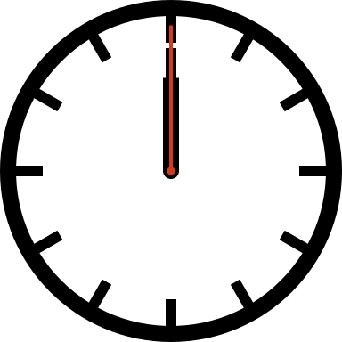

Smart icons come bundled with Javascript which makes the magic happen. All you need to do is add your icon as an image tag and Iconic does the heavy lifting. Your code is clean, your clock tells time and all is well.

<img src="clock.svg" class="svg-inject">
$('.svg-inject').svgInject();
<svg version="1.1" class="iconic-clock" xmlns="http://www.w3.org/2000/svg" xmlns:xlink="http://www.w3.org/1999/xlink" x="0px" y="0px" width="384px" height="384px" viewBox="0 0 384 384" enable-background="new 0 0 384 384" xml:space="preserve">
<path class="iconic-clock-frame" d="M192,0C85.961,0,0,85.961,0,192s85.961,192,192,192s192-85.961,192-192S298.039,0,192,0zM315.037,315.037c-9.454,9.454-19.809,17.679-30.864,24.609l-14.976-25.939l-10.396,6l14.989,25.964c-23.156,12.363-48.947,19.312-75.792,20.216V336h-12v29.887c-26.845-0.903-52.636-7.854-75.793-20.217l14.989-25.963l-10.393-6l-14.976,25.938c-11.055-6.931-21.41-15.154-30.864-24.608s-17.679-19.809-24.61-30.864l25.939-14.976l-6-10.396l-25.961,14.99C25.966,250.637,19.017,224.846,18.113,198H48v-12H18.113c0.904-26.844,7.853-52.634,20.216-75.791l25.96,14.988l6.004-10.395L44.354,99.827c6.931-11.055,15.156-21.41,24.61-30.864s19.809-17.679,30.864-24.61l14.976,25.939l10.395-6L110.208,38.33C133.365,25.966,159.155,19.017,186,18.113V48h12V18.113c26.846,0.904,52.635,7.853,75.792,20.216l-14.991,25.965l10.395,6l14.978-25.942c11.056,6.931,21.41,15.156,30.865,24.611c9.454,9.454,17.679,19.808,24.608,30.863l-25.94,14.976l6,10.396l25.965-14.99c12.363,23.157,19.312,48.948,20.218,75.792H336v12h29.887c-0.904,26.845-7.853,52.636-20.216,75.792l-25.964-14.989l-6.002,10.396l25.941,14.978C332.715,295.229,324.491,305.583,315.037,315.037z" />
<line class="iconic-clock-hour-hand" id="foo" fill="none" stroke="#000000" stroke-width="18" stroke-miterlimit="10" x1="192" y1="192" x2="192" y2="87.5"/>
<line class="iconic-clock-minute-hand" id="iconic-anim-clock-minute-hand" fill="none" stroke="#000000" stroke-width="12" stroke-miterlimit="10" x1="192" y1="192" x2="192" y2="54"/>
<circle class="iconic-clock-axis" cx="192" cy="192" r="9"/>
<g class="iconic-clock-second-hand" id="iconic-anim-clock-second-hand">
<line class="iconic-clock-second-hand-arm" fill="none" stroke="#D53A1F" stroke-width="4" stroke-miterlimit="10" x1="192" y1="192" x2="192" y2="28.5"/>
<circle class="iconic-clock-second-hand-axis" fill="#D53A1F" cx="192" cy="192" r="4.5"/>
</g>
<defs>
<animateTransform
type="rotate"
fill="remove"
restart="always"
calcMode="linear"
accumulate="none"
additive="sum"
xlink:href="#iconic-anim-clock-hour-hand"
repeatCount="indefinite"
dur="43200s"
to="360 192 192"
from="0 192 192"
attributeName="transform"
attributeType="xml">
</animateTransform>
<animateTransform
type="rotate"
fill="remove"
restart="always"
calcMode="linear"
accumulate="none"
additive="sum"
xlink:href="#iconic-anim-clock-minute-hand"
repeatCount="indefinite"
dur="3600s"
to="360 192 192"
from="0 192 192"
attributeName="transform"
attributeType="xml">
</animateTransform>
<animateTransform
type="rotate"
fill="remove"
restart="always"
calcMode="linear"
accumulate="none"
additive="sum"
xlink:href="#iconic-anim-clock-second-hand"
repeatCount="indefinite"
dur="60s"
to="360 192 192"
from="0 192 192"
attributeName="transform"
attributeType="xml">
</animateTransform>
</defs>
<script type="text/javascript">
<![CDATA[
var date = new Date;
var seconds = date.getSeconds();
var minutes = date.getMinutes();
var hours = date.getHours();
hours = (hours > 12) ? hours - 12 : hours;
minutes = (minutes * 60) + seconds;
hours = (hours * 3600) + minutes;
document.querySelector('.iconic-clock-second-hand').setAttribute('transform', 'rotate('+360*(seconds/60)+',192,192)');
document.querySelector('.iconic-clock-minute-hand').setAttribute('transform', 'rotate('+360*(minutes/3600)+',192,192)');
document.querySelector('.iconic-clock-hour-hand').setAttribute('transform', 'rotate('+360*(hours/43200)+',192,192)');
]]>
</script>
</svg>.